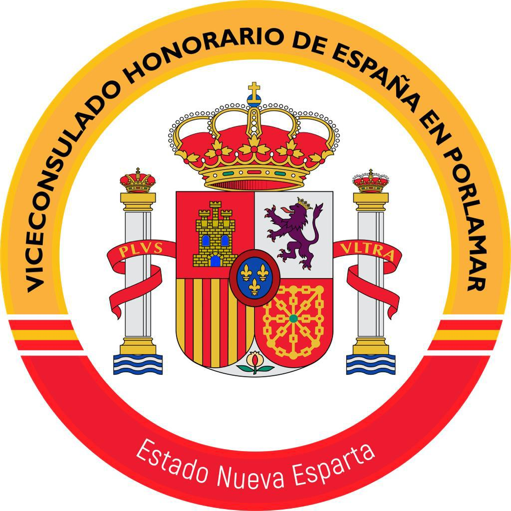

Porlamar — Estado Nueva Esparta, Venezuela
El Viceconsulado Honorario de España en Porlamar atiende a los ciudadanos españoles residentes en el Estado Nueva Esparta y a quienes deseen realizar gestiones consulares en la región. Dependiente del Consulado General de España en Caracas, ofrece un servicio presencial y personalizado para las comunidades de Margarita, Coche y las demás islas del archipiélago.
Brindamos asistencia consular en materia de documentación, registro civil, nacionalidad y servicios de identificación. Todos los servicios se prestan exclusivamente con cita previa, garantizando una atención de calidad y ordenada a cada ciudadano.
Seleccione un servicio para ver los requisitos completos y los documentos necesarios para su cita.
Primera Expedición
Renovación
Certificaciones con Extensión Plurilingüe
Complete el formulario y le contactaremos para confirmar fecha y hora. Cada cita es individual y para un solo trámite.
¿Prefiere contactarnos directamente?
Escribir por WhatsAppEl Viceconsulado Honorario de España en Porlamar es una representación oficial del Ministerio de Asuntos Exteriores, Unión Europea y Cooperación del Reino de España, con jurisdicción en el Estado Nueva Esparta. Atendemos a la comunidad española residente en las islas de Margarita, Coche y Cubagua, brindando servicios consulares de registro civil, documentación y asistencia a ciudadanos.
Respuestas a las dudas más comunes. Si su pregunta no está aquí, contáctenos por WhatsApp.
¿Su pregunta no está aquí? Contáctenos directamente.
Preguntar por WhatsApp